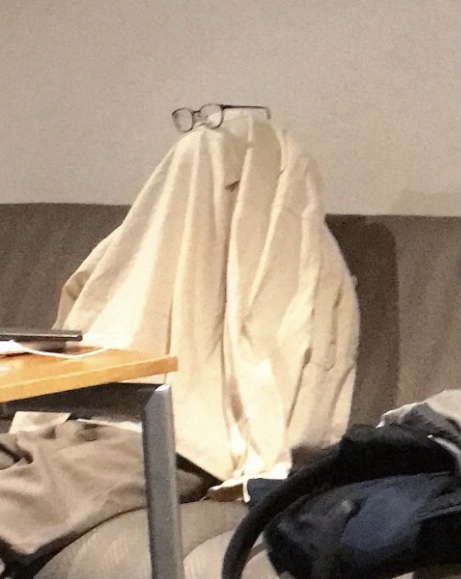
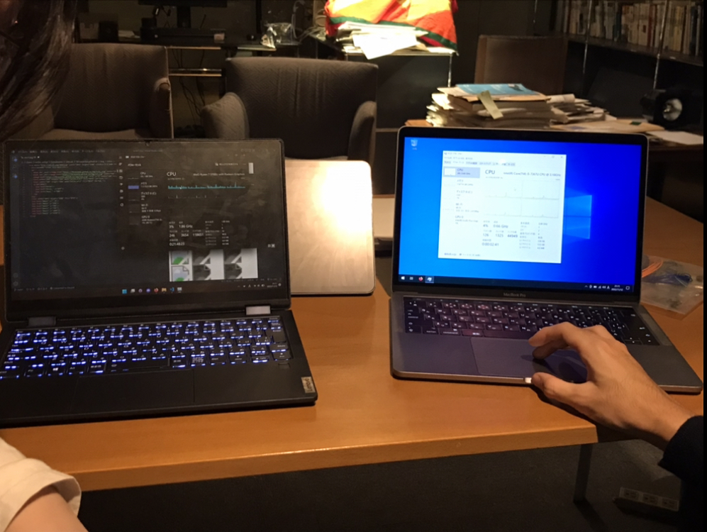

活動内容
①クラウドファンディングの修正
②支援の応募内容の作成
今日はワークショップなどのイベントが終わり、ゆったりした雰囲気で活動しました。 9日(水)にクラウドファンディングの審査結果が返ってきたので、修正を行っていました。主にクラファン班がやってくれました。修正箇所が多く、萎えてメンバーがおばけになってました！(かわいい！！)
私は支援の応募で使用する文章を考えていました。資金に関わることなので、他のメンバーと知恵を振り絞って、考えました。応募の締め切りが近づいていたので、メンバーと協力し合って書き終えました！こういう状況で協力し合えるのが、SAZANKA Roboticsの良さだな～としみじみ思いました。
文章を作り終えた後は、メンターさんにパソコンの機種について熱弁してもらいました。私は全く理解できなかったですが、話についていけるようにもっと勉強します！！
